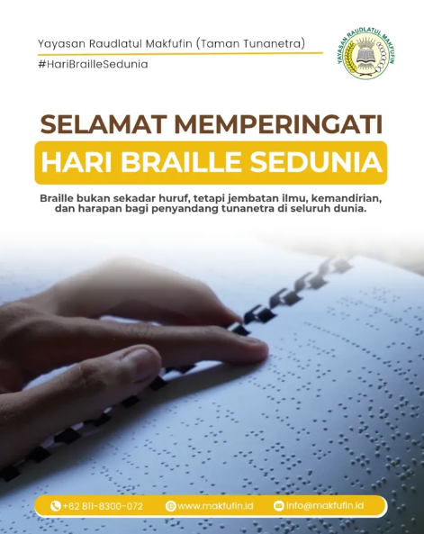
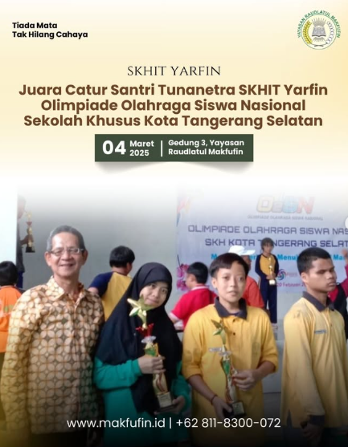
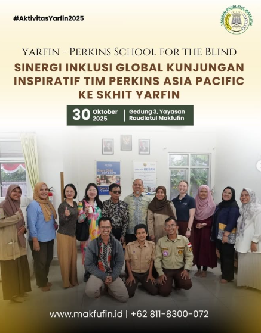
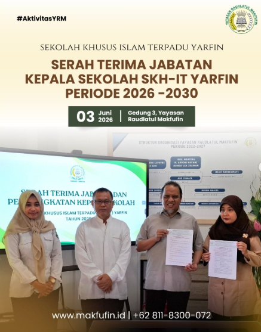
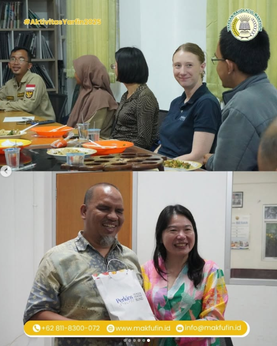
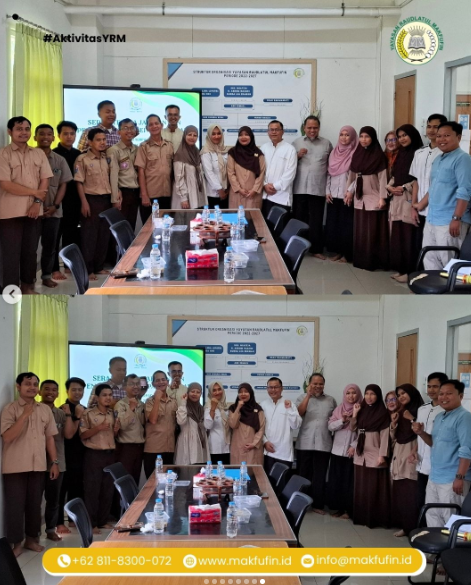

Membangun Kemandirian Melalui Cahaya Iman
Selamat datang di SKH Islam Terpadu Yarfin. Wahana pendidikan inklusif yang memadukan intelektualitas modern dengan keteguhan aqidah Islamiah.
Profil Sekolah
SKH Islam Terpadu Yarfin merupakan sekolah khusus yang berada di bawah naungan Yayasan Raudlatul Makfufin, berlokasi di Kota Tangerang Selatan, Provinsi Banten. Sekolah ini menyelenggarakan pendidikan khusus bagi peserta didik penyandang tunanetra pada jenjang SDLB, SMPLB, dan SMLB dengan status sekolah swasta dan terakreditasi B.
Sebagai lembaga pendidikan inklusif yang berlandaskan nilai-nilai Islam, SKH Islam Terpadu Yarfin berkomitmen untuk memberikan layanan pendidikan yang berkualitas, ramah, dan sesuai dengan kebutuhan peserta didik tunanetra. Proses pembelajaran dirancang untuk mengembangkan kemampuan akademik, keterampilan hidup, kemandirian, serta pembentukan karakter Islami yang kuat.
Sekolah didukung oleh tenaga pendidik yang berdedikasi, fasilitas pembelajaran yang memadai, akses internet, laboratorium, serta lingkungan belajar yang kondusif bagi perkembangan peserta didik. Selain fokus pada pendidikan akademik, sekolah juga aktif mengembangkan potensi siswa melalui berbagai kegiatan keagamaan, keterampilan, teknologi, dan pengembangan bakat.
Sejalan dengan visinya, SKH Islam Terpadu Yarfin berupaya membentuk pribadi tunanetra muslim yang cakap, cerdas, mandiri, serta mampu mengimplementasikan ajaran Islam yang terkandung dalam Al-Qur'an dan Sunnah Rasul dalam kehidupan sehari-hari, sehingga dapat berkontribusi bagi agama, bangsa, dan negara.
Dengan semangat pelayanan, kepedulian, dan pendidikan yang berkelanjutan, SKH Islam Terpadu Yarfin terus berinovasi untuk menjadi lembaga pendidikan khusus yang unggul dalam mencetak generasi tunanetra yang berprestasi, berakhlak mulia, dan siap menghadapi tantangan masa depan.
Visi, Misi & Tujuan
Visi
"Membentuk pribadi tunanetra muslim yang cakap, cerdas, mandiri serta mampu mengimplementasikan ajaran-ajaran islam yang terkandung dalam al-qur’an dan sunnah rasul pada pembangunan agama bangsa dan Negara."
Misi
- Orientasi bertitik tolak pada Al-Qur’an.
- Menitik beratkan pada Sunah Rasul (Hadist).
- Membentuk akhlakul karimah yang berorientasi pada perikehidupan Rasulullah.
- Membangun kesehatan jasmani dan rohani melalui pengetahuan keolahragaan.
- Berorientasi pada pengembangan intelektual siswa.
Tujuan Sekolah
Tujuan Umum
Meletakkan pondasi keimanan yang pokok serta daya nalar yang inovatif kepada tunanetra muslim agar menjadi warga negara yang budiluhur.
Tujuan Khusus
- Wahana pendidikan khusus dengan warna keagamaan spesifik.
- Konsep boarding school (asrama) yang intensif.
- Keterampilan modern berbasis teknologi komputer.
- Pembinaan aqidah Ahli Sunah Wal Jamaah.
- Lembaga modern berbasis Computer Rise.
Galeri Kegiatan






Penerimaan Peserta Didik Baru (PPDB)
Mari Bergabung Bersama Kami!
SKH Islam Terpadu Yarfin membuka pendaftaran peserta didik baru untuk jenjang SDLB, SMPLB, dan SMLB khusus tunanetra. Dapatkan layanan pendidikan yang inklusif, modern, dan berlandaskan pada nilai-nilai ajaran Islam.
Syarat Pendaftaran:
- Mengisi Formulir Pendaftaran Lengkap.
- Fotokopi Kartu Keluarga (KK) dan KTP Orang Tua.
- Fotokopi Akta Kelahiran Calon Peserta Didik.
- Pas Foto terbaru ukuran 3x4 dan 4x6 (Masing-masing 4 lembar).
- Surat Keterangan Hasil Pemeriksaan Psikolog / Dokter Spesialis Mata (Jika ada).
- Fotokopi Ijazah/STTB Terakhir (Khusus pendaftar jenjang SMPLB dan SMLB).
Untuk informasi lebih lanjut, silakan hubungi WhatsApp panitia PPDB:
+62 811-83000-72
Kontak Kami
Informasi Kantor
Alamat:
Jl. H. Jamat Gang Masjid I No.
10A, RT. 002 RW. 05 Kampung Jati, Kel. Buaran, Kec. Serpong,
Tangerang Selatan, Banten 15316
Telepon:
(+62 21) 74635929
+62
811-83000-72 (Kantor)